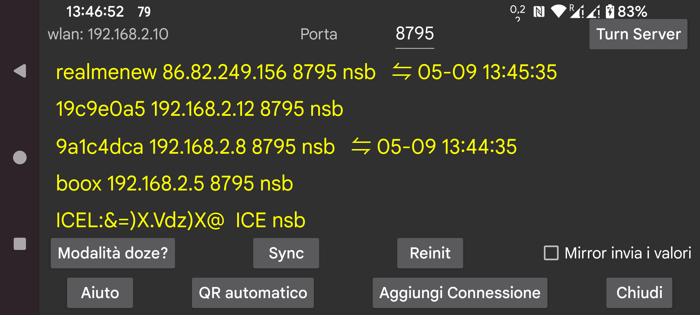

Invia dati a o ricevi dati da un altro dispositivo. Puoi connetterti a un dispositivo android su cui è in esecuzione Juggluco per visualizzare i dati allo stesso modo come qui. Dopo aver ricevuto i dati di scansione, il dispositivo mirror può anche connettersi al sensore tramite Bluetooth. Per assicurarsi che solo uno dei dispositivi si metta in contatto con il sensore, "menu sinistro->Sensore->Usa Bluetooth" viene disattivato automaticamente quando i valori di Flusso arrivano tramite IP/TCP.
In questa schermata, dopo "WLAN", vedrai l'IP Wi-Fi locale di questo dispositivo. Inseriscilo sull'altro dispositivo della tua rete domestica a cui ti stai connettendo (o sul tuo modem, se ti stai connettendo da remoto).
Dopo Porta, puoi cambiare la porta TCP su cui questa app è in ascolto per le connessioni.
Cliccando su Aggiungi connessione puoi specificare con quali host connetterti e come connetterti.
Su Android, le connessioni di rete affidabili vengono interrotte da ogni sorta di ottimizzazione della batteria e restrizioni in background, premendo Doze mode ti aiuta a cambiarlo.
Mirror invia valori: Se questa app riceve valori di farmaci, cibo e attività da Juggluco in esecuzione su un altro dispositivo, non dovresti aggiungere o modificare valori qui. Selezionando questa opzione si rende impossibile farlo.
Sync invia nuovi dati a un dispositivo connesso se disponibili o richiede nuovi dati.
Reinit: Chiude le connessioni esistenti e ne crea una nuova.
Auto QR: genera una connessione per inviare tutti i dati da questo telefono a Juggluco su un altro. L'altro telefono deve scansionare il codice QR con menu sinistro → Foto.
Wifi (solo su WearOS): Quando non è impostato il WIFI viene disattivato automaticamente dopo qualche tempo da WearOS per preservare la durata della batteria e Juggluco passa all'uso del Bluetooth per la connessione tra telefono e orologio. Quando è attivato, viene chiesto a WearOS di mantenere il WIFI attivo e ci vorrà più tempo prima che venga disattivato, ma può comunque accadere. Impostare questa opzione normalmente non è necessario e i creatori di WearOS ritengono che attivare il WIFI porterà a grandi aumenti del consumo della batteria.
Le connessioni esistenti sono mostrate in una lista, vengono mostrati l'etichetta, la porta IP e mese, giorno e ora dell'ultimo sync riuscito.
Come viene usata la connessione è abbreviato come segue:
n: valori (numbers)
s: scansioni
b: flusso (bluetooth)
r: ricevi
Per maggiori informazioni sulle connessioni Mirror leggi l'aiuto sotto "Aggiungi connessione" e vedi https://www.juggluco.nl/Juggluco/index.html#mirror
Puoi eseguire l'app Android Juggluco su un computer Windows, Macintosh o Linux con l'aiuto di un emulatore Android (ad esempio Genymotion). Se usi Linux (ad esempio Ubuntu sotto MS Windows), puoi anche usare Waydroid. Il Juggluco sull'emulatore riceve i dati tramite una connessione Mirror da un telefono Android connesso al sensore. Sotto l'emulatore android Studio Android e Genymotion, i movimenti di Pinch (muovere due dita l'una verso o lontano dall'altra) possono essere simulati premendo il tasto Control mentre si muove il puntatore del mouse. Waydroid non supporta questo, ma Juggluco lo implementa per sé solo.